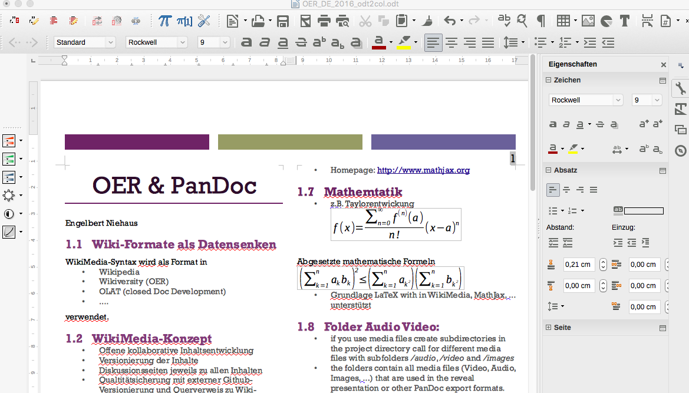
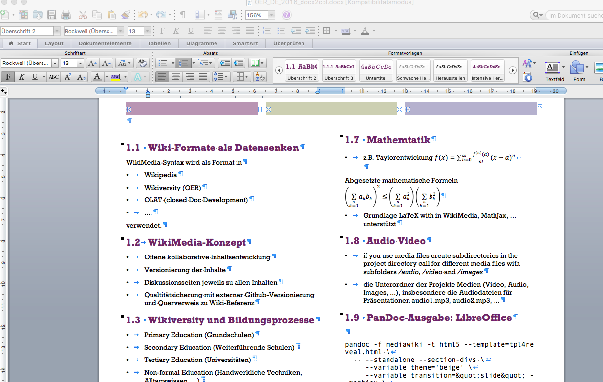

Wikiversity und Bildungsprozesse
- Primary Education (Grundschulen)
- Secondary Education (Weiterführende Schulen)
- Tertiary Education (Universitäten)
- Non-formal Education (Handwerkliche Techniken, Alltagswissen, ...)
PanDoc Electron

PanDoc Electron
Mathemtatik
- z.B. Taylorentwickung
Abgesetzte mathematische Formeln
- Grundlage LaTeX with in WikiMedia, MathJax, ... unterstützt
Audio Video
- Die Mediendateien werden in einen Unterverzeichnis der Projekte gespeichert /audio, /video and /images
- die Unterordner der Projekte Medien (Video, Audio, Images, ...),
- insbesondere für Audiodateien zu Präsentationen audio1.mp3, audio2.mp3, ...
PanDoc-Ausgabe: LibreOffice

PanDoc-Ausgabe: LibreOffice Layout

PanDoc-Ausgabe: Word Layout

PanDoc von der Kommandozeile
pandoc -f mediawiki -t html5 --template=tpl4reveal.html \
--standalone --section-divs \
--variable theme='beige' \
--variable transition="slide" --mathjax \
wikipedia.wiki -o wikipedia.html
GitHub: Versionierung einer Qualitätssicherung
- GitHub zur Versionierung von Quelltexten (i.d. Programmcode)
- für OER angewendet auf WikiMedia Quelltextes
- Lese-Zugriff frei/offen
- Schreibzugriff auf die Versionierung nur durch Gutachterteam
- Gutachter-Innen nicht anonym
Zusammenfassung
- Wikiversity: Offene kollaborative Inhaltsentwicklung für OER
- Versionierung: Inhalte werden versioniert inkl. Diskussionsseiten
- PanDoc(Electron): Tools für Konvertierung der Inhalte in andere Formate
- Qualtitätsicherung: Externer Github-Versionierung und Querverweis zu Wiki-Referenz